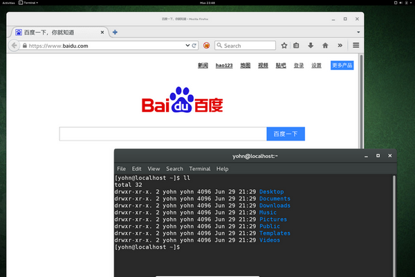

这两天给 Surface Pro 装了个 VirtualBox 虚拟机，系统镜像是 Fedora 22。安装过程一切顺利（纯傻瓜式操作，不得不承认，O 家虽然还是法务部门最牛X，但开(shou)源(gou)的产品做得也还是很不错的），而且即使在只分配了 1G 内存的情况下系统运行也挺顺畅。唯一不满意的就是那可恶的小窗口了。
一开始只是 VirtualBox 中虚拟机系统窗口很小：
在按照 VirtualBox虚拟机 Ubuntu分辨率太小的解决方案 中所说的“安装增强功能”之后，这个问题没有了，系统终于可以真正地全屏了：
但是这样更新之后系统的实际显示字体还是很小。（到这里就想吐槽下 Win 系的桌面，由于 SP3 是 2160×1440 的高分辨率，而很多应用程序（包括 MS 自身的很多软件）都没有为这种分辨率进行优化，导致系统的正常使用极为别扭，即使调整了显示倍数还是有很多软件的界面不是太大就是太小，严重降低了用户体验。）在 How to make Linux's desktop look good on high-resolution displays 的建议下，安装 Gnome 的 tweak-tool
sudo yum install gnome-tweak-tool
然后在 tweak-tool 里将 “Windows” --> “HiDPI” 的值由 1 设置为 2，确认之后，就会发现这个世界还是很美好的 :-)

BTW，Fedora 的壁纸还是很赞的。
Comments
comments powered by Disqus